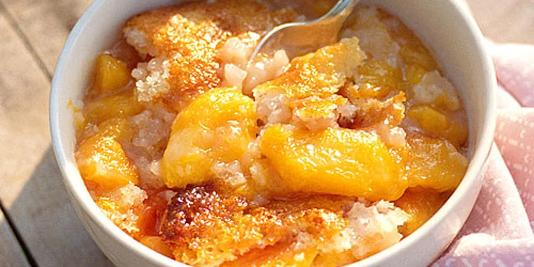

Southern Peach Cobbler

Description
This tried and true peach cobbler recipe uses fresh Georgia peaches and a handful of common ingredients to bring the sweetness of the South to any home dessert table.
The nutrition facts listed on the recipe's original site indicate a total of 562 calories, 3.5g protein, 99.4g carbohydrates, 17.6g fat, and 399.7mg of sodium per serving.
Ingredients
- 8 fresh peaches - peeled, pitted and sliced into thin wedges
- 1/4 cup white sugar
- 1/4 cup brown sugar
- 1 teaspoon fresh lemon juice
- 1/4 teaspoon ground cinnamon
- 1/8 teaspoon ground nutmeg
- 2 teaspoons cornstarch
- 1 cup all-purpose flour
- 1/4 cup white sugar
- 1/2 teaspoon salt
- 6 tablespoons unsalted butter, chilled and cut into small pieces
- 1/4 cup boiling water
Mix Together:
- 3 tablespoons white sugar
- 1 teaspoon ground cinnamon
Steps
- Preheat oven to 425 degrees F (220 degrees C).
- In a large bowl, combine peaches, 1/4 cup white sugar, 1/4 cup brown sugar, 1/4 teaspoon cinnamon, nutmeg, lemon juice, and cornstarch. Toss to coat evenly, and pour into a 2 quart baking dish. Bake in preheated oven for 10 minutes.
- Meanwhile, in a large bowl, combine flour, 1/4 cup white sugar, 1/4 cup brown sugar, baking powder, and salt. Blend in butter with your fingertips, or a pastry blender, until mixture resembles coarse meal. Stir in water until just combined.
- Remove peaches from oven, and drop spoonfuls of topping over them. Sprinkle entire cobbler with the sugar and cinnamon mixture. Bake until topping is golden, about 30 minutes.